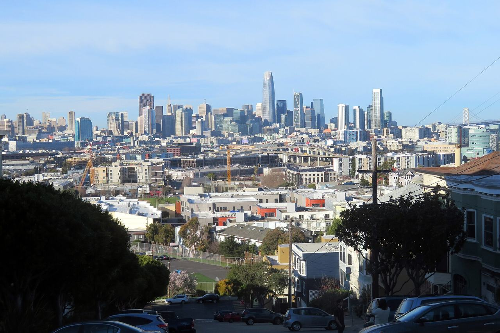

Potrero Hill
The hill west of Interstate 280, between Mariposa Street and Islais Creek, on the slopes above the industrial flats of Potrero Point. Where Dogpatch housed the shipyard workers on the level ground, the hill above it filled in later and more loosely, and its 19th-century blocks carry no historic district. Coverage begins with an address named in Christopher VerPlanck's 2001 Dogpatch Historic District Survey, which reached past the survey boundary to the grocery a family opened here in 1905.

Map
Named buildings and landmarks
-

-

-
-
-
-
-
-
-
-
Streets documented so far
- 17th Street
3 buildings, built 1900–1948. - 18th Street
7 buildings, built 1984–1985. - 19th Street
1 building, built 1907. - 20th Street
2 buildings, built 1900–1950. - 22nd Street
1 building, built 1915. - 23rd Street
1 building, built 1999. - 25th Street
1 building, built 2006. - 3rd Street
1 building, built 1946. - Arkansas Street
1 building, built 1950; 1 in the Midcentury Recreation Historic District (Discontiguous). - Carolina Street
1 building, built 1985. - Connecticut Street
2 buildings, built 1900–1906. - De Haro Street
5 buildings, built 1895–1960. - Kansas Street
1 building, built 1964. - Mariposa Street
7 buildings, built 1904–1995. - Maryland Street
1 building; 1 in the Union Iron Works Historic District. - Minnesota Street
2 buildings, built 1895–1900; 2 in the Dogpatch Historic District. - Mississippi Street
1 building, built 1928. - Missouri Street
4 buildings, built 1911–1962. - Pennsylvania Avenue
3 buildings, built 1906–1942. - Rhode Island Street
1 building, built 1910. - Texas Street
2 buildings, built 1900–1909. - Vermont Street
1 building, built 1900. - Wisconsin Street
7 buildings, built 1900–1968.
Parks and public spaces
- Arkansas Friendship Garden
Community garden, 5,663 sq ft. - Connecticut Friendship Garden
Community garden, 6,098 sq ft. - Jackson Playground
Neighborhood park or playground, 4.9 acres. - Mariposa Park
Neighborhood park or playground, 2.7 acres. - Potrero Hill Mini Park
Mini park, 9,583 sq ft. - Potrero Hill Rec Center
Neighborhood park or playground, 10.1 acres.
Historic districts here
Adjacent neighborhoods
Dogpatch is the flat ground east across Interstate 280; the two together make up the city's Potrero Hill analysis neighborhood. The Mission lies west across Potrero Avenue, Mission Bay north-west beyond Mariposa Street, and Bayview Hunters Point south across Islais Creek.